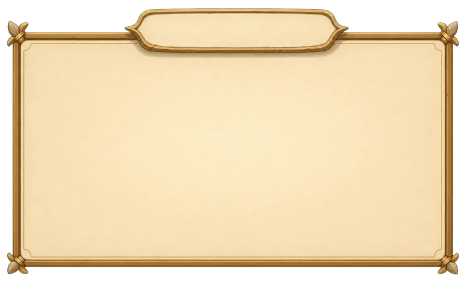

Ball is God?! Gire a torre. Torne-se o impacto.
Um arcade hardcore de descida vertical em que o arrasto horizontal gira a torre em volta de Espa enquanto ela cai. Pule pousos seguros, carregue um golpe combo e atravesse um mundo mítico em que um golpe sem proteção encerra a partida.
Em produção ativa: dez cenas de locais, chefes, diálogos ramificados e caminhos de carma que mudam as regras do jogo.
Girararraste a torre ao redor de Espa
Riscopular três pousos seguros
Esmagarromper a plataforma
Dentro da versão atual
O karma muda muito mais que os diálogos.
Os caminhos de carma claro, neutro e sombrio mudam o comportamento do escudo, os avisos de ataque, a agressividade dos inimigos e as fases dos chefes, então a história muda o seu jeito de jogar.
Status da versão Em desenvolvimento ativoTodos os dez mundos de diálogo
Planos de fundo de diálogo dos dez mundos, na ordem da descida, de Ena a Deka.


UI de produção atual
Seleção de nível, diálogo e telas de resultado na versão atual.
Este é o fluxo atual na ordem em que você o encontra: seleção de nível, diálogo, uma escolha importante e depois a vitória ou uma tela de derrota separada. Todas as imagens abaixo usam arte do projeto de produção no Unity.
A rota celestial seleciona níveis gerados em dez capítulos de 100 níveis.
O menu de produção mapeia dez locais em capítulos de 100 níveis e abre diretamente na partida selecionada.

 201
201O diálogo acontece dentro do local.
O retrato do personagem, a arte do local e a placa de quem fala compartilham um só quadro vertical.



Shash
Prossiga então - mas não pense que será fácil. Trials esperam por você que farão com que tudo o que aconteceu antes pareça uma ninharia.
04 / Escolha do marco
A resposta passa a fazer parte da descida.
Nos níveis locais 90 e 100, o painel dedicado pede uma decisão de poupar ou matar antes que o diálogo resolva a partida.

Poupar
Matar
05 / Menus de resultados
A vitória continua. A derrota retorna ao mesmo desafio.
A versão atual tem dois estados de resultado separados: PanelWin oferece repetir e próximo nível, enquanto PanelOver mantém uma ação única e inconfundível de repetir.
Vitória · PanelWin
Descida concluída
 Repetir
Próximo
Repetir
Próximo
Repetir
Próximo
Elenco de diálogo
Rostos encontrados na descida.
Todos os 25 personagens de produção que contam com pares válidos de retrato aberto e fechado estão incluídos abaixo. Passe o mouse ou foque um cartão para alternar a expressão.


Visão geral do jogo
Ball is God?! é um jogo de arcade hardcore sobre cair por uma torre giratória.
A ideia
Guie Espa por uma torre divina. Um erro pode encerrar a partida, e suas grandes escolhas mudam o jeito como o mundo se joga.
Versão atual
Dez cenas de locais, geração procedural de torre, golpe combo, escudo por deslize, configurações de chefe, diálogos ramificados, menus de produção e retratos prontos para expressão estão implementados.
Público
Jogadores que gostam de arcades difíceis para celular, do ritmo de risco e recompensa e de chefes, com uma história para acompanhar.
Status
Em produção ativa. O trabalho recente abrange os sistemas em execução, a arte dos mundos, os testes e como o jogo funciona no celular.
Recursos
O que você faz em Ball is God?!
Descida com arrasto para girar
O arrasto horizontal gira a torre em volta de Espa enquanto ela cai automaticamente, alinhando vãos, perigos e plataformas seguras.
Pressão de arcade hardcore
Um único golpe sem proteção encerra a partida, então é preciso ler a torre e cronometrar cada movimento.
Chefes e mundos míticos
Dez cenas de locais, cada uma com seus próprios chefes, levam a história de um mundo ao seguinte.
Escolhas que mudam as regras
Misericórdia, força e carma mudam diálogos, regras de escudo, agressividade dos inimigos, avisos de ataque e fases de chefe.
Ciclo de jogo
Como jogar Ball is God?!
- Passo 01Leia a descida
Observe as próximas plataformas, vãos e perigos e procure janelas seguras de tempo enquanto você cai.
- Passo 02Gire a torre
O arrasto horizontal gira o mundo em volta de Espa, alinhando uma plataforma segura ou um vão proposital.
- Passo 03Arrisque e esmague
Pule três plataformas para carregar um golpe combo e depois atravesse as estruturas enquanto o escudo cobre um erro letal.
- Passo 04Escolha a consequência
Misericórdia e força moldam o carma, o diálogo e as regras de jogo transportadas para inimigos e chefes.
História / mundo
Uma torre mítica em que suas escolhas descem junto com você.
Ball is God?! começou com um fascínio infantil por arcades mobile de descida vertical: ler vãos, reagir rápido e sobreviver por instinto.
O formato podia levar mais: chefes, personagens com personalidade, uma história e tensão moral. O projeto atual acompanha Espa por dez cenas de locais e um elenco de personagens estranhos, com escolhas que mudam tanto a história quanto o jogo.
Então o objetivo virou um arcade simples de descida vertical, com a pressão de uma luta de chefe e as consequências de um RPG guiado pela história.
- Visão
- Um arcade de torre giratória com uma história mítica
- Escopo atual do mundo
- Dez locais e configurações de chefes
- Estágio da história
- Rascunho completo da história em formato longo
- Estado de produção
- Em desenvolvimento ativo
Resumo rápido
Controles simples de arrastar, com uma história que muda as regras.
Os controles de arrastar para girar são imediatos. O resto vem dos mundos míticos, dos chefes e das escolhas que alteram a jogabilidade.
A versão atual já combina geração determinística de torres, golpes de risco e recompensa, falha com um só golpe, chefes, diálogos ramificados e um carma que muda a jogabilidade.
- Gênero
- Arcade de descida vertical guiado pela história
- Plataforma-alvo
- iOS/Android
- Formato da sessão
- Partidas rápidas baseadas em habilidade
- Estúdio
- WillowinWorlds
Baixar recursos
Materiais de Ball is God?! para imprensa e criadores
Prévias WebP para cobertura de imprensa, avaliação por publicadoras e referências de páginas de loja. Arquivos de origem em resolução total estão disponíveis sob pedido.
Marca e personagens
O ícone do jogo mais todos os 25 personagens atuais que possuem retratos completos de diálogos de produção. Os nomes correspondem às chaves de localização Unity.
EspaRetrato do personagem do jogador.
RevlaRetrato do diálogo de produção.
ShashRetrato do diálogo de produção.
ShushRetrato do diálogo de produção.
ShishRetrato do diálogo de produção.
GigoRetrato do diálogo de produção.
GogaRetrato do diálogo de produção.
GigaRetrato do diálogo de produção.
AskoldRetrato do diálogo de produção.
MirasRetrato do diálogo de produção.
HihRetrato do diálogo de produção.
HehRetrato do diálogo de produção.
HahRetrato do diálogo de produção.
MusyaRetrato do diálogo de produção.
DusyaRetrato do diálogo de produção.
SusyaRetrato do diálogo de produção.
VladusRetrato do diálogo de produção.
FrishaRetrato do diálogo de produção.
LurenRetrato do diálogo de produção.
KurenRetrato do diálogo de produção.
Don YagonRetrato do diálogo de produção.
LuryaRetrato do diálogo de produção.
KhleyaRetrato do diálogo de produção.
VaronRetrato do diálogo de produção.
WhiteRetrato do diálogo de produção.
Planos de fundo do menu
Arte de produção atual usada pelo sistema de seleção de nível celestial.
 Menu celestial
Menu celestialMundos de descida vertical
Conjunto completo dos dez planos de fundo de locais atuais, ordenados de Ena a Deka.
 01 · Mundo do céuFundo de descida vertical Ena.
01 · Mundo do céuFundo de descida vertical Ena.
 02 · Mundo espacialFundo de descida vertical Dyo.
02 · Mundo espacialFundo de descida vertical Dyo.
 03 · Mundo da tempestadeFundo de descida vertical Tria.
03 · Mundo da tempestadeFundo de descida vertical Tria.
 04 · Mundo de neveFundo de descida vertical Tessera.
04 · Mundo de neveFundo de descida vertical Tessera.
 05 · Mundo vulcânicoFundo Pente; animado no jogo.
05 · Mundo vulcânicoFundo Pente; animado no jogo.
 06 · Mundo oceânicoFundo de descida vertical Eksi.
06 · Mundo oceânicoFundo de descida vertical Eksi.
 07 · Mundo desérticoFundo de descida vertical Epta.
07 · Mundo desérticoFundo de descida vertical Epta.
 08 · Mundo da florestaFundo de descida vertical Ohto.
08 · Mundo da florestaFundo de descida vertical Ohto.
 09 · Mundo da cavernaFundo de descida vertical Ennea.
09 · Mundo da cavernaFundo de descida vertical Ennea.
 10 · Mundo infernalFundo de descida vertical Deka.
10 · Mundo infernalFundo de descida vertical Deka.
Fundos do arcade com história
Conjunto completo de locais de diálogo: o Salão da Luz e os planos de fundo para todos os dez mundos.
 00 · Salão da LuzFundo do diálogo de abertura.
00 · Salão da LuzFundo do diálogo de abertura.
 01 · Diálogo do céuFundo da história de Ena.
01 · Diálogo do céuFundo da história de Ena.
 02 · Diálogo do espaçoFundo da história de Dyo.
02 · Diálogo do espaçoFundo da história de Dyo.
 03 · Diálogo da tempestadeFundo da história de Tria.
03 · Diálogo da tempestadeFundo da história de Tria.
 04 · Diálogo da neveFundo da história de Tessera.
04 · Diálogo da neveFundo da história de Tessera.
 05 · Diálogo do vulcãoFundo da história de Pente.
05 · Diálogo do vulcãoFundo da história de Pente.
 06 · Diálogo do oceanoFundo da história de Eksi.
06 · Diálogo do oceanoFundo da história de Eksi.
 07 · Diálogo do desertoFundo da história de Epta.
07 · Diálogo do desertoFundo da história de Epta.
 08 · Diálogo da florestaFundo da história de Ohto.
08 · Diálogo da florestaFundo da história de Ohto.
 09 · Diálogo da cavernaFundo da história de Ennea.
09 · Diálogo da cavernaFundo da história de Ennea.
 10 · Diálogo do infernoFundo da história de Deka.
10 · Diálogo do infernoFundo da história de Deka.
Perguntas frequentes sobre Ball is God?!
Perguntas frequentes sobre Ball is God?!
Que tipo de jogo é Ball is God?!
Um arcade hardcore de descida vertical. Você gira uma torre em volta de Espa enquanto ela cai, pula os pousos seguros para carregar golpes e atravessa mundos míticos.
Como se joga Ball is God?!
Arraste na horizontal para girar a torre, pule três plataformas para carregar um golpe e deslize na vertical quando o escudo com recarga precisar absorver um golpe letal.
Ball is God?! já foi lançado?
Ainda não. Está em produção ativa, nos sistemas em execução, na arte dos mundos, no conteúdo da história e nos testes. Não há data de lançamento pública. As plataformas-alvo são iOS e Android.
O que torna Ball is God?! diferente?
Mistura pressão de arcade de risco e recompensa com dez locais e um carma que muda diálogos, inimigos, avisos de ataque, escudos e chefes.
Quem faz Ball is God?!
WillowinWorlds, um estúdio independente que faz jogos de quebra-cabeça e arcade para celular.
Materiais de imprensa de Ball is God?!: posso usá-los?
Sim, para imprensa, avaliação por publicadoras e referências de loja. Os arquivos de origem continuam privados, a menos que você os peça.
Devlog Ball is God?!
O que mudou e quando
- Superfícies do mundo e validação de perigos
A apresentação dos personagens, a geração determinística e os perigos de espinhos passaram por uma revisão conjunta, visual e de validação.
- Julho de 2026Revisão da UI de produção e dos personagens
A seleção de níveis, os controles de ação compartilhados, o enquadramento vertical dos diálogos e as expressões de personagem em pares já estão prontos.
- Fevereiro de 2026Revisão do escopo do projeto
A equipe completou uma grande etapa de integração da história e revisou toda a escala do projeto: dez mundos, escolhas morais, chefes e múltiplos finais.
- Abril a maio de 2025Reescrita e habilidades da história
A história completa foi reescrita, as habilidades dos personagens foram melhoradas e as consequências morais tornaram-se mais claras.
- Agosto de 2024Começa a direção da história
A equipe decidiu que Ball is God?! devia ser mais do que uma simples descida arcade e acrescentou uma história mítica e uma visão de escolhas morais.
- Julho de 2024Conceito original
O projeto começou como a primeira ideia de jogo do estúdio: um arcade vertical e rápido sobre cair por uma torre divina.
- Versão atualArcade e história em uma só versão
A descida pela torre giratória, o golpe combo, o escudo por deslize, os chefes, o diálogo e o carma agora funcionam juntos em uma só versão.